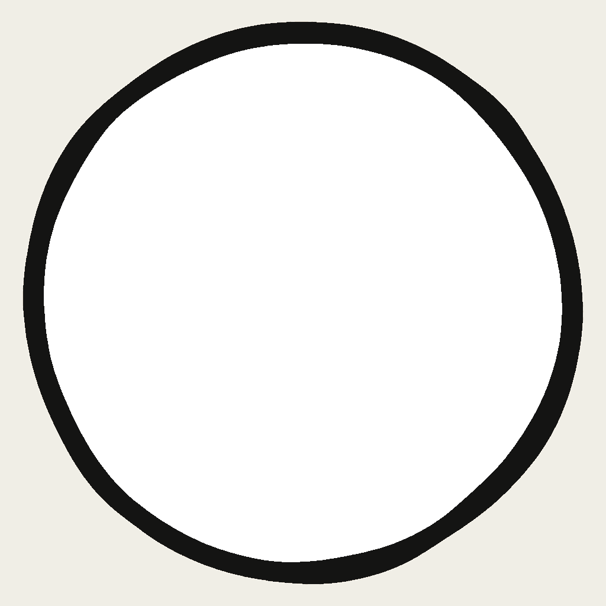
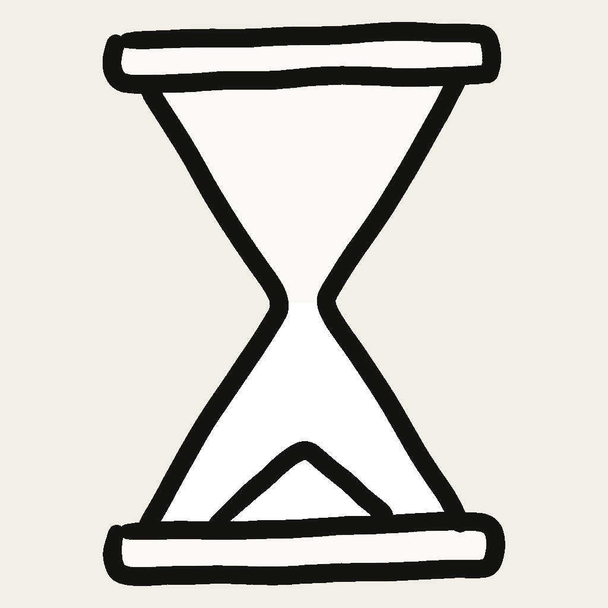

One drawing per axis. The amount of beige is set by CSS, so the four states can never drift apart — and they animate.


<span class="icon level" style="--fill:.5"> <span class="bar"></span> <img src="assets/icons/level/moon-frame.png" alt="confident"> </span>
Set --fill from the data. Level: 0, .25, .5, 1. Time: 0, .38, .6, 1.
Add class="icon time" for the hourglass, which fills only its lower chamber.